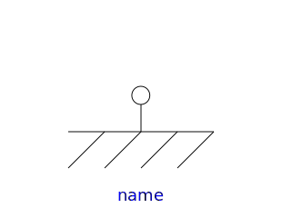
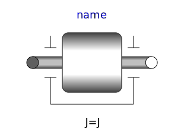
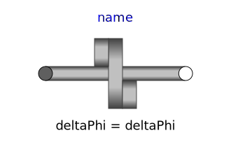
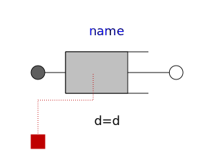
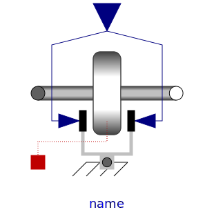
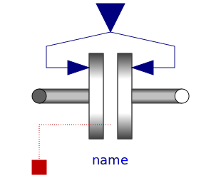
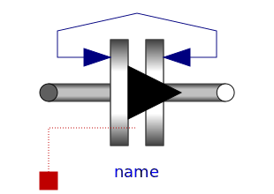
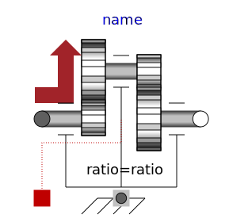
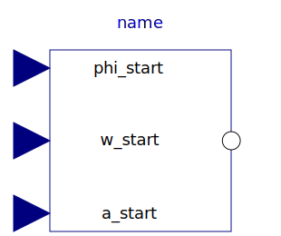
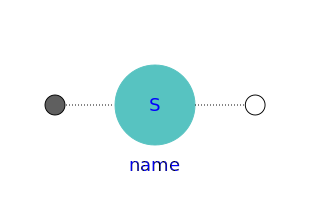

This package contains basic components 1D mechanical rotational drive trains.
| Name | Description |
|---|---|
|  Fixed | Flange fixed in housing at a given angle |
|  Inertia | 1D-rotational component with inertia |
|  Disc | 1-dim. rotational rigid component without inertia, where right flange is rotated by a fixed angle with respect to left flange |
| Linear 1D rotational spring | |
|  Damper | Linear 1D rotational damper |
| Linear 1D rotational spring and damper in parallel | |
| Backlash connected in series to linear spring and damper (backlash is modeled with elasticity) | |
| Coulomb friction in bearings | |
|  Brake | Brake based on Coulomb friction |
|  Clutch | Clutch based on Coulomb friction |
|  OneWayClutch | Series connection of freewheel and clutch |
| Ideal gear without inertia | |
|  LossyGear | Gear with mesh efficiency and bearing friction (stuck/rolling possible) |
| Ideal planetary gear box | |
| Realistic model of a gearbox (based on LossyGear) | |
| Gearbox transforming rotational into translational motion | |
| Simple 1-dim. model of an ideal rolling wheel without inertia | |
|  InitializeFlange | Initializes a flange with pre-defined angle, speed and angular acceleration (usually, this is reference data from a control bus) |
|  RelativeStates | Definition of relative state variables |
|
|
Signal adaptor for a Rotational flange with angle, speed, and acceleration as outputs and torque as input (especially useful for FMUs) |
|
|
Signal adaptor for a Rotational flange with torque as output and angle, speed, and optionally acceleration as inputs (especially useful for FMUs) |